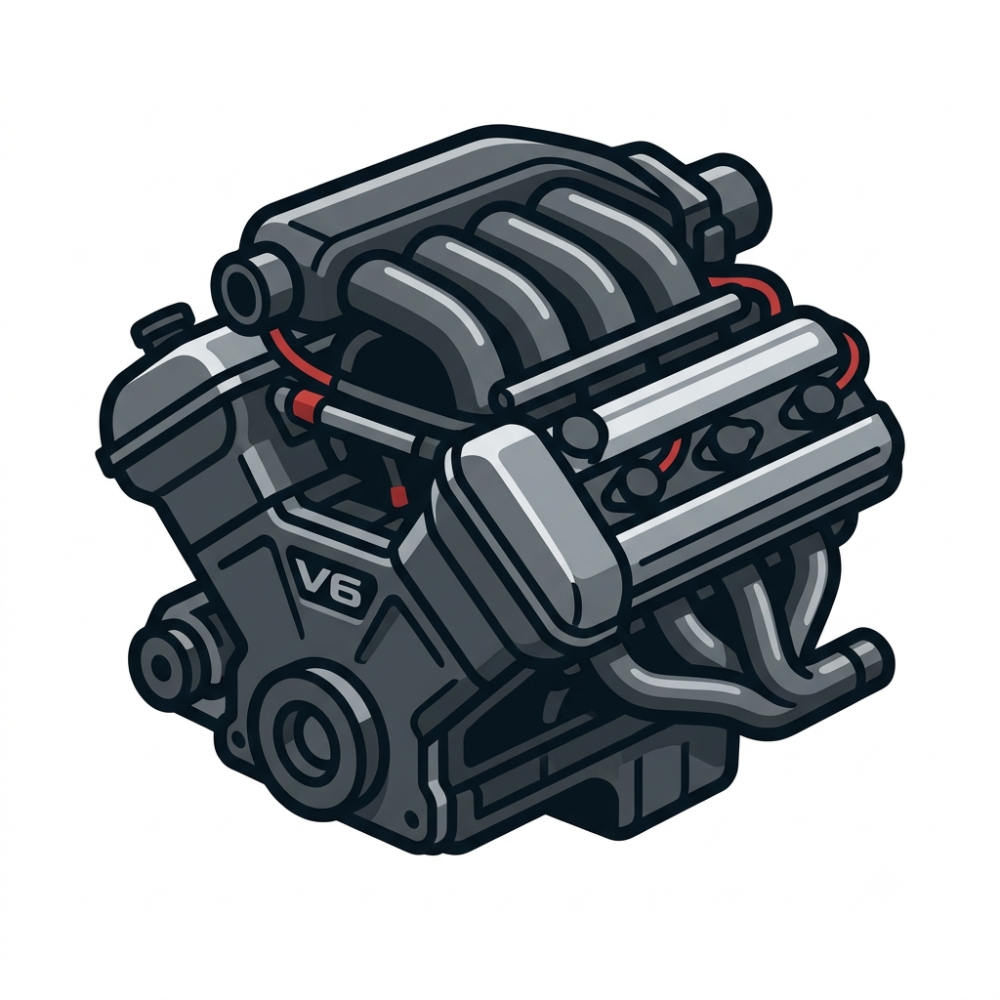
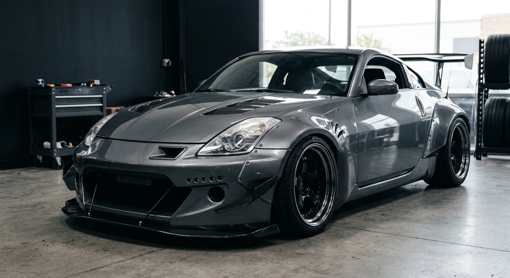
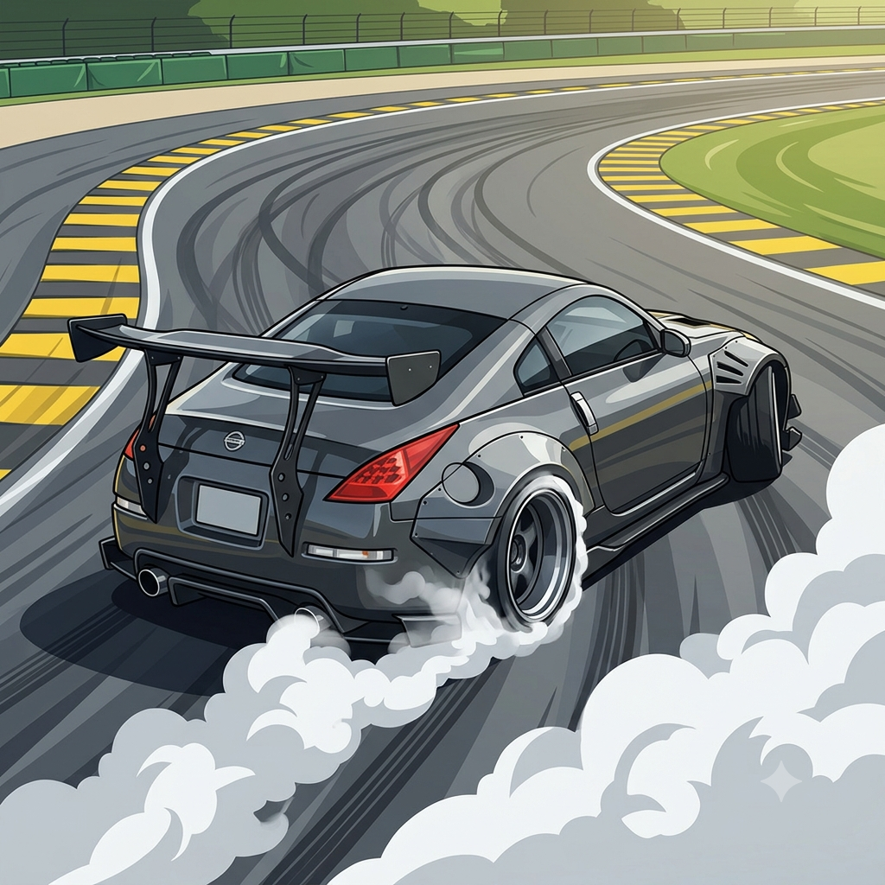
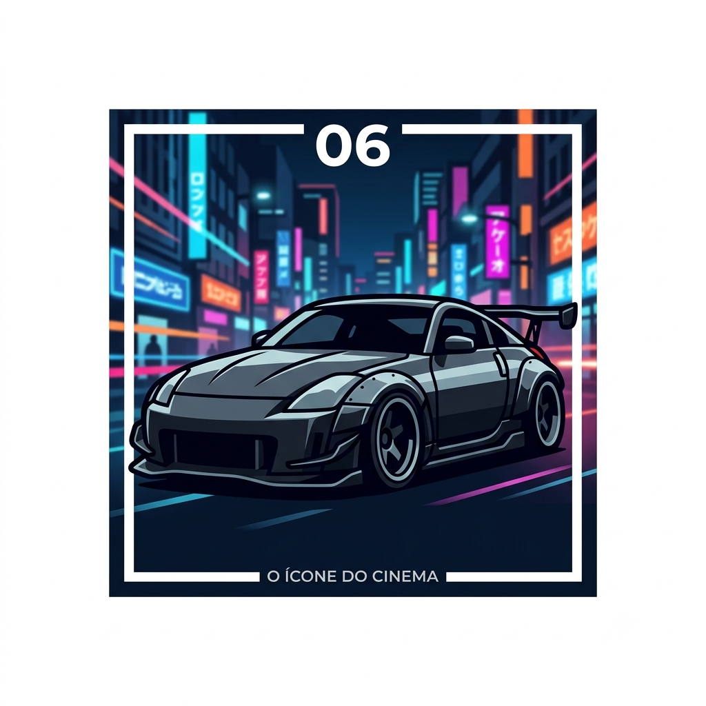

Boas-vindas ao Blog do 350Z!
Por: João Pedro Lopes de Carvalho
Seja bem-vindo! Aqui você encontrará curiosidades, modificações, bodykits e muito conteúdo sobre a lenda dos motores VQ35DE/HR.
Tudo sobre bodykits, turbo e a cultura do lendário esportivo japonês
Por: João Pedro Lopes de Carvalho
Seja bem-vindo! Aqui você encontrará curiosidades, modificações, bodykits e muito conteúdo sobre a lenda dos motores VQ35DE/HR.

Por: João Pedro Lopes de Carvalho
O Nissan 350Z vem equipado com o aclamado motor VQ35DE (e posteriormente o VQ35HR), um V6 3.5L aspirado conhecido por seu ronco inconfundível e alta durabilidade para modificações.
Fonte: Nissan Heritage

Por: João Pedro Lopes de Carvalho
Embora venha aspirado de fábrica, o motor do 350Z responde incrivelmente bem a kits de turbo e supercharger, ultrapassando facilmente os 400 cv de potência no miolo original com o acerto correto.
Fonte: Revista Fullpower

Por: João Pedro Lopes de Carvalho
Sets de carroceria como Rocket Bunny, VeilSide e Liberty Walk transformam totalmente o visual do 350Z, trazendo para-lamas alargados, aerofólios generosos e uma presença marcante na pista.
Fonte: Speedhunters

Por: João Pedro Lopes de Carvalho
Graças à tração traseira, distribuição de peso equilibrada e entre-eixos ideal, o Nissan 350Z tornou-se uma das plataformas mais populares e desejadas para o Drift no mundo todo.
Fonte: Formula Drift

Por: João Pedro Lopes de Carvalho
O 350Z com bodykit VeilSide pilotado pelo personagem Takashi (DK) no filme Velozes e Furiosos: Desafio em Tóquio (2006) imortalizou o carro na cultura pop automotiva.
Fonte: Autoesporte